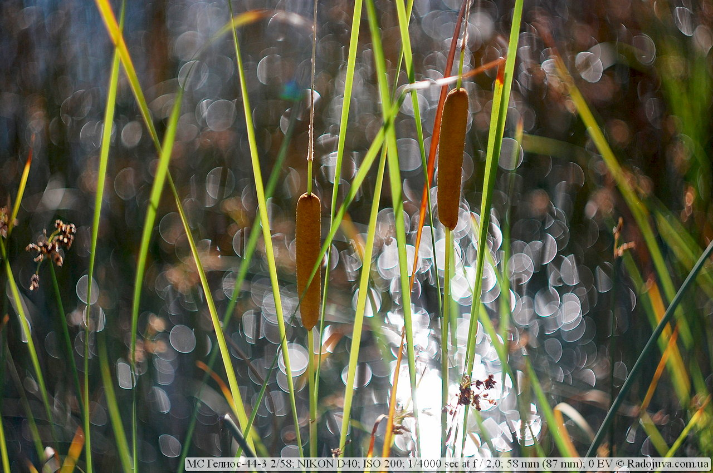
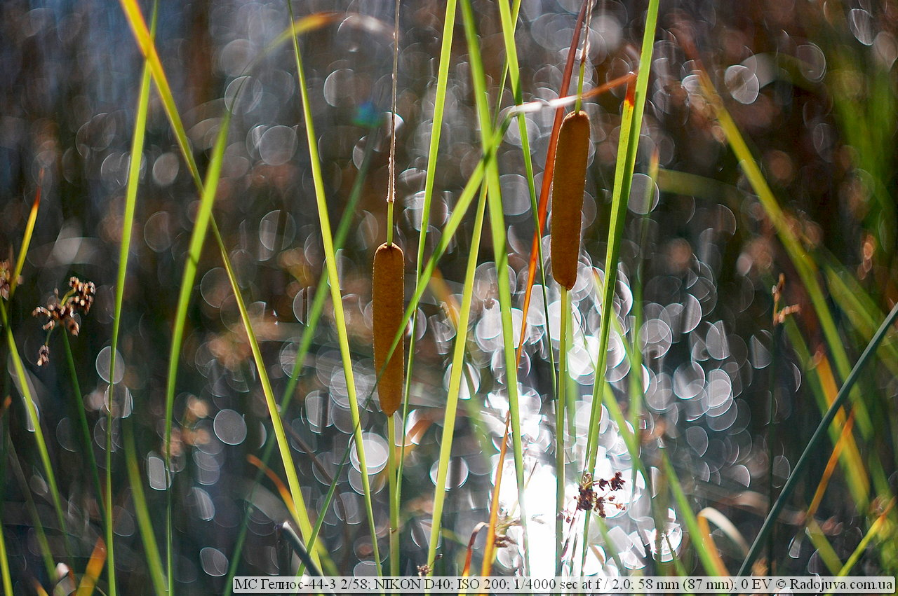
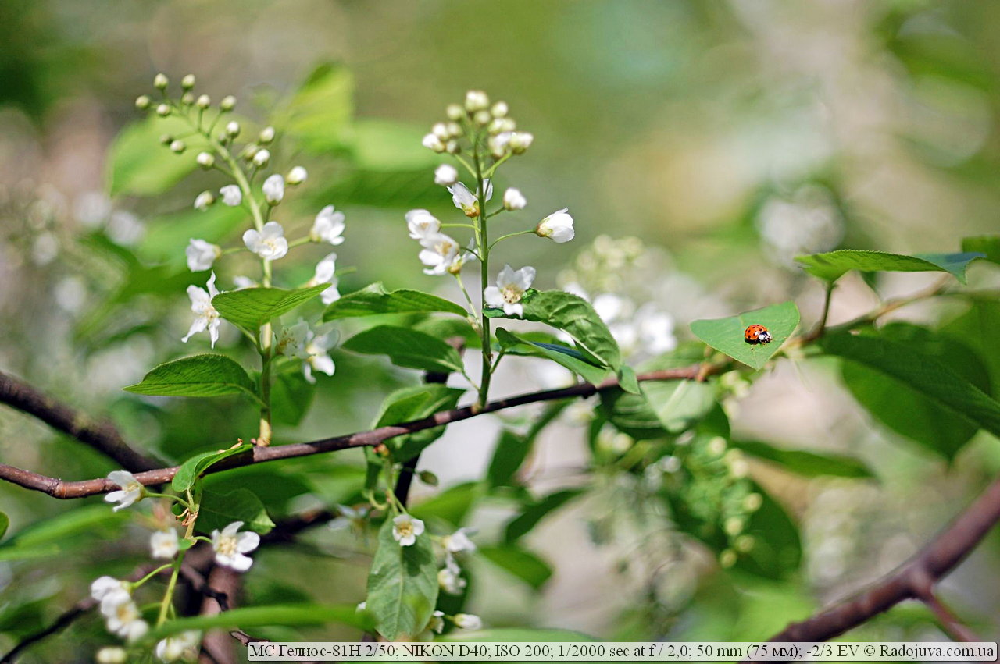
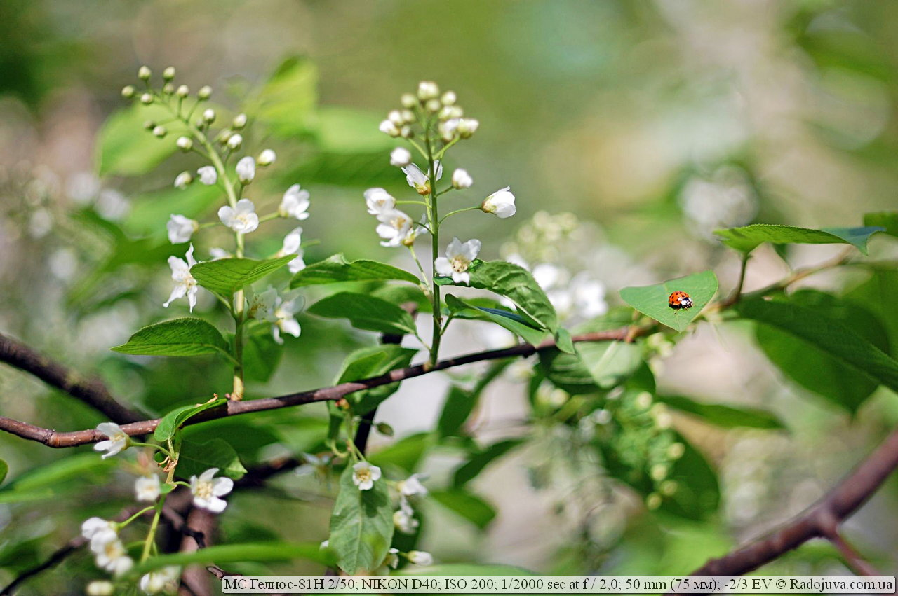

Что и как влияет на фотографию?
Мой рейтинг факторов:
1. Фотограф – главный элемент во время фотосъемки. Если бы не было человека, камера бы не включилась, не установилась в правильном положении возле модели или пейзажа, не сфокусировалась и вообще не сделала снимок. Фотограф управляет всем процессом съемки, он полностью отвечает за процесс съемки, отвечает за результат и никакие отмашки здесь не являются допустимыми. Если кто-то назвался фотографом, он должен суметь фотографировать и получать отличный результат даже на телефон, мыльницу и консервную банку. А это требует куда большего, чем просто взять камеру в руки и нажать кнопку.
Но, конечно же, человек сам не может контролировать все, потому следующим фактором, который влияет на создание фотографии, я назову внешние факторы.
2. Внешние факторы, такие как место съемки, настрой участвующих в съемке, тип съемки и время, выделенное на съемку. Приведу пример: когда фотограф снимает свой репортаж, он не может заставить кого-то смотреть именно туда, куда ему нужно, или попросить сделать что-то, он может только ловить моменты, искать удачный ракурс. Также, снимая пейзаж вдруг начинает дождь – фотографу не удастся получить идеально синее небо, но он может получить дождливую картинку. Очень сильно влияет психологический настрой участвующих в съемке. Не всегда можно настроить и расположить к съемки участников или, например, изменить прическу модели. На художественную фотографию очень сильно влияет помощь визажиста, продуманная идея и т.д. Опытный фотограф сумеет выжать с образовавшейся ситуации максимум и никогда не будет винить такое стечении обстоятельств.
3. Свет – элемент и технический и натуральный. Свет – ключ к успеху. Свет – это то, что создает изображение на пленке, или на матрице, или в крайнем случае – дает летний загар. Без света фотографу сложно. Управление светом тоже делает фотограф – он правильно располагает участвующих по направлению солнца, подбирает тени. С технической стороны фотограф пользуется вспышкой, даже днем, отражателями, софтбоксами, системами креативного освещения. Особенно это актуально в студии.
3.1. Помощник фотографа. Я не стал выделять помощника фотографа отдельным пунктом, который влияет на фото, ибо помощника фотографа можно больше отнести к самому фотографу, который организовал фотосъемку, а так как помощник фотографа чаще всего занимается организацией нужного освещения, то помощник является частью системы освещения. В ряде случаев без помощника не обойтись. С помощником можно получить хорошее фото намного быстрей, да и побеседовать всегда найдется с кем :). Обычно серьезная съемка задействует очень много людей, так называемую команду фотографа. Команда фотографа, тоже, очень и очень важна для создания хороших снимков.
4. Пост обработка с помощью программного обеспечения (например, с помощью программ Photoshop, Lightroom и т.д). Не секрет, что в наше время поглощающая часть фотографии цифровая, и порой она требует цифровой обработки. От умений фотографа, или другого человека откорректировать кадр с помощью ПО зависит очень много. Все знают, что с мыльницы фото можно «вытянуть» не хуже чем с навороченной зеркалки. Это требует времени, умения и сил.
Спойлер: сегодня жесткая пост обработка фото стала своеобразным бичом фотографии. С любой, даже самой отвратительной фотографии, можно сотворить ‘шедевр’, добавив туда миллион и один фильтр :).
5. Объектив – незаменимый инструмент в руках любого фотографа. Всем известная пословица, что фотограф покупает объектив, а на сдачу камеру. Объектив дает именно ту картинку которые мы видим, он ее создает, искривляет, дополняет, работает с резкостью, ГРИП и другими умными вещами. От скорости его фокусировки и фокусных расстояний, светосилы зависит очень многое. Потому, объектив так важен в фотографии.
6. Фотоаппарат. По большому счету, это черный (иногда более гламурного цвета) ящик, со шторками, которые иногда открываются, чтобы подать свет на пленку, матрицу и т.д. При чем раньше пленка и камера тоже были раздельными. Сейчас так много уделяют вниманию камере в силу того, что там стоит матрица вместо пленки, которая имеет ряд характеристик, над которыми работают много ученых, и которые обговаривают еще больше людей. Камера позволяет просто стыковать работу фотографа, объектива, вспышки (света) и сохранить изображение на пленку или карточку памяти.
7. Печатающее устройство. От него зависит самый-самый конечный результат всех потуг фотографа. Принтера имеют разное качество печати, цветовые профили, это не маловажный момент.
Коллега предоставляет новую услугу профессиональную фотосъёмку картин для тиражирования, репродукции или печати в каталогах , может кому будет интересно, детали здесь.
8. Дисплей. Иногда, я бы сказал, очень часто фото не доходит до печати и демонстрируется на дисплее. Само собой, чем качественнее дисплей передает цвета и оттенки – тем лучше будет смотреться фото. По этому поводу написано также миллионы статей.
Такой список мной был составлен для того, чтобы показать, что сама техника, а именно камера и объектив, не являются главными источниками хороших фотографий. Думаю, многие знают и понимают, что хорошие снимки можно сделать и на телефон.
Некоторые полезные выводы:
Не всегда нужно гоняться за дорогой профессиональной камерой, даже на самую простенькую камеру со сменной оптикой можно получить чудесные фотографии. Привожу свои примеры с самой примитивной и старой 6-ти мегапиксельной, самой медленной и очень древней зеркалки Nikon D40:
 

 

(EXIF данные смотри снизу по фотографиями). Главным преимуществом камер со сменной оптикой является размер матрицы, и для всех кропнутых камер он практически одинаковый, точно так как и для полнокадровых камер и камер другого типа. Практически можно получать одни и те же фотографии, особенно при работе на низких ISO с камер разного уровня, например с Nikon D40 и D7000, Pentax-k30 и Pentax K10, Canon 350D и Canon 60D. Мои примеры на древнюю Canon 350D:


Потому, не важно какой техникой Вы фотографируете, важно как Вы это делаете. Мысль всей статьи такова, что не стоит гонятся за навороченной камерой и объективами, конечно, камера тоже важна в фотографировании, но более важными аспектами являются перечисленные факторы.
Вывод
Уважайте работу фотографов, и помните, что фотографирует именно человек, а на конечный результат камера влияет чуть ли не в последнюю очередь. Если мы будем считать навороченность камеры единственным мерилом профессионализма фотографа, то все мы попадем в ловушку глупости.
Материал подготовил Аркадий Шаповал. Ищите меня на Youtube | Facebook | Instagram | Twitter